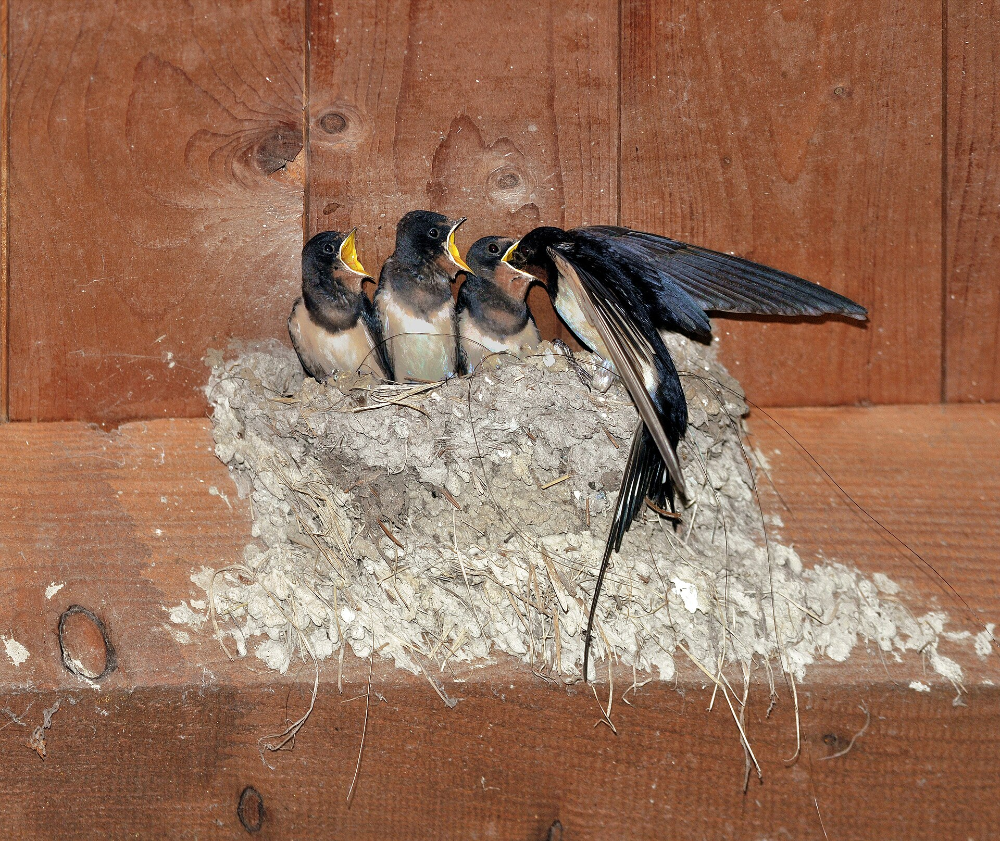

第 5 章
檐下春秋
五月的傍晚，广东梅州松口古镇。沿江的骑楼老街在夕阳下拖出长长的影子，青石板路面被往来的脚步磨得光滑发亮。空气里有江水、老木头和炒菜的油烟混合的气味。

街面上没什么人了，但檐下开始热闹起来。那些巢筑在骑楼二层木梁和墙壁的夹角处，一个挨着一个，像倒扣的泥碗。每只巢的开口都朝外，朝向街道的方向。成鸟回来了，翅膀收拢的瞬间身体微微后仰，爪子精准地扣住巢沿。
巢里立刻爆发出雏鸟急切的叫声——那种声音很难形容，像是无数细小的弹簧被同时压缩又释放。成鸟在巢沿停留的时间通常不超过三秒，吐出虫子的动作几乎和起飞连在一起，然后再次射入暮色。
整条街的燕子都在做同一件事。它们在空中编织出一张不断变化的网，每只鸟都是一条线，线的两端分别连着巢和远处江面上的飞虫群。飞行高度很低，有时会从行人身侧不到一米的地方掠过，近到能听见翅膀划破空气的嘶嘶声。但没有人躲闪。这条街上的人习惯了。这是家燕。
它的学名Hirundo rustica里，rustica的意思是“乡间的”“朴素的”。命名者林奈在1758年给了它这个名字，大概是因为这种鸟总是出现在农舍、村庄、田野这些人类定居但不那么繁华的地方。
但“朴素”这个词可能低估了它。在所有与人类共生的鸟类中，家燕是少数几种几乎完全放弃了野外栖息地的物种之一。它的分布范围覆盖除南极洲外的所有大陆，繁殖地北至北极圈，南至阿根廷火地岛。但无论在哪儿，它都倾向于把巢筑在人造结构上。这是一种选择，而不是别无选择的结果。
家燕对巢址的要求可以归纳为三个条件。第一，需要一个水平的支撑面，通常位于屋檐、梁柱或墙壁的夹角处，巢可以直接附着在上面。第二，支撑面上方需要有遮蔽物，防止雨水直接冲刷泥巢——家燕的巢是泥做的，虽然混合了唾液和草茎增强强度，但持续淋雨仍会导致结构软化坍塌。第三，巢址附近必须有湿润的泥土来源，因为每一口巢材都需要成鸟飞到泥塘、水田或河岸边衔取。这三个条件听上去并不苛刻。
但在自然界中，同时满足这三者的位置并不多见——岩洞入口处的水平岩架符合条件，但数量有限；河岸的土崖符合条件，但容易坍塌。
人类建筑的出现，尤其是带有出檐的房屋，为家燕提供了近乎无限的理想巢址。出檐提供了水平的梁架和上方的遮蔽，人类聚落附近的水源和农田保证了泥源和昆虫食物。
家燕的整个繁殖策略，在演化时间尺度上看，是一张对人类定居文明开出的期票。这张期票兑现了至少两千年。
在中国，家燕与人类建筑的关系可以追溯到《诗经》时代。《商颂·玄鸟》有“天命玄鸟，降而生商”的句子，虽然“玄鸟”是否确指家燕仍有争议，但汉代的训诂学家已经将家燕与人居的关系视为常识。《礼记·月令》记载仲春之月“玄鸟至”，仲秋之月“玄鸟归”，说明当时的人已经精确掌握了家燕的迁徙节律。唐宋以降，家燕入诗入画不计其数，刘禹锡“旧时王谢堂前燕，飞入寻常百姓家”成为最著名的燕子意象——这个意象的核心恰恰在于燕子不择贵贱，只要有屋檐就愿意筑巢。
但“有屋檐”这个前提，正在被现代城市系统地取消。2016年，一群日本鸟类学家在东京及周边地区做了一项调查。他们选择了三十个家燕历史繁殖点——这些地点在二十年前都有活跃的燕巢记录——然后逐一回访。结果令人不安：三十个点中，有二十二个已经不再有家燕繁殖。消失的原因高度一致：建筑物被拆除重建，新建筑取消了出檐设计，或者原有的开放式走廊被玻璃幕墙封闭。
这不是日本独有的现象。英国皇家鸟类保护协会的长期监测数据显示，英格兰和威尔士的家燕繁殖种群在过去三十年里下降了约百分之三十。下降曲线与两个变量高度相关：一是农村传统谷仓和畜棚的拆除速度，二是城市郊区化过程中新建住宅的建筑风格变化。现代住宅的设计逻辑——封闭式阳台、光滑的外墙立面、瓷砖或金属板材贴面、尽可能减少出檐以降低风阻和维护成本——每一项都在取消家燕需要的巢址条件。问题的关键不在于“城市”这个抽象概念。家燕并不排斥城市本身。
在曼谷、胡志明市、台北的某些老城区，家燕仍然密集繁殖，甚至在新加坡这样的高度城市化地区，只要建筑保留了足够的出檐和廊道，家燕就会留下来。真正的问题在于城市建筑的形态正在趋同，而这种趋同的方向恰好与家燕的筑巢需求背道而驰。
要理解这种背道而驰的精确边界，最好的办法不是看那些已经失去家燕的地方，而是看那些仍然留住它们的地方。广州的石牌村是一个例子。这片城中村位于天河区的核心地带，周围被高层写字楼和购物中心包围，地铁三号线从地下穿过。村内的建筑密度极高，楼间距狭窄到有些巷子终年见不到直射阳光。但就在这些“握手楼”之间，家燕的巢密集地附着在旧式村屋的檐下。
为什么是这里？答案藏在三个细节里。第一，石牌村的建筑大多建于上世纪八十至九十年代，虽然简陋，但保留了传统岭南民居的出檐结构——二楼的阳台向外挑出约一米，下方形成水平的支撑面和遮蔽空间。
第二，村内仍保留着一些未硬化的地面——不是公园绿地，而是自建房之间的边角空地，雨天会积水形成临时泥塘，为家燕提供了泥源。第三，也是容易被忽略的一点：城中村的垃圾处理方式相对粗放，露天堆放的生活垃圾滋生了大量蝇类和小型飞虫，这些昆虫恰好落在家燕的掠食高度范围内。
这三个条件共同构成了一个微型的生态飞地。它不是城市规划有意为之的结果——恰恰相反，它是规划未能完全覆盖的缝隙。石牌村的家燕不是被“保护”下来的，而是被“漏掉”的。
类似的模式在全国多个城市重复出现。武汉的昙华林老街区、成都的宽窄巷子周边民居、北京的南锣鼓巷胡同区——这些地方的共同特征是建筑年代较早、改造速度较慢、保留了某种程度的“未完成”状态。它们都是城市中的异质性斑块，与周围的高层住宅和商业综合体形成了鲜明的对比。
对比的另一端是那些看似宜居却实际上排斥家燕的空间。上海浦东的一个新建住宅小区。景观设计获得了市级奖项：中央水景蜿蜒曲折，两岸种植着精心修剪的灌木和草坪；
建筑立面采用了现代简约风格，米黄色的真石漆外墙平整光滑；每户都有宽敞的封闭式阳台，落地玻璃窗保证了采光和视野。小区入口处立着一块标语牌：“人与自然和谐共生”。
在这个小区里，没有家燕筑巢。原因不是没有鸟尝试。物业管理记录显示，每年四五月间，确实有家燕出现在小区上空，有时会盘旋在水景上方捕食飞虫。但它们从未在此筑巢。
问题出在建筑本身：封闭式阳台取消了出檐结构，外墙没有任何可供附着的水平支撑面；真石漆表面虽然粗糙，但垂直的墙面无法承载泥巢的重量；唯一的水平结构是阳台栏杆的顶部，但那是一条宽度不足两厘米的金属边沿，且完全暴露在雨水中。即使有鸟试图在这种条件下筑巢，结果也往往是失败的。
在杭州的一个类似小区里，有人观察到一对家燕反复尝试在空调外机的支架上筑巢。那是一个勉强可用的位置——支架提供了水平的支撑面，上方的空调外机提供了遮蔽。但问题出在泥源上。小区周围所有的地面都被硬化了：柏油路面、水泥铺装、塑胶跑道、地下车库入口。
最近的泥源是两公里外一条尚未整治的河道支流。那对燕子坚持了大约一周，最终放弃了。
这个失败的案例揭示了家燕面临的困境不是单一维度的。巢址、泥源、食物——这三个条件必须同时满足，缺一不可。现代城市对这三个条件的打击是系统性的：建筑形态取消了巢址，地面硬化断绝了泥源，杀虫剂和绿地管理模式减少了昆虫食物。
关于杀虫剂的影响，需要单独展开来说。家燕的食物几乎全部由飞行昆虫构成。双翅目（蝇、蚊）、膜翅目（蜂、蚁）、鞘翅目（甲虫）、半翅目（蚜虫、蝉）和蜻蜓目的昆虫都在它们的食谱上。成鸟在飞行中张口捕食，雏鸟则依赖成鸟衔回的虫团——一只雏鸟从孵化到离巢大约需要二十天，在此期间每天需要被喂食数百只昆虫。
这个食物链直接暴露在城市杀虫剂的使用之下。中国城市绿化常用的菊酯类杀虫剂和新烟碱类杀虫剂对飞行昆虫具有广谱杀灭效果。一片经过常规杀虫处理的草坪，其上空飞行昆虫的生物量可能比未处理的自然草地低百分之六十到八十。
这个数字来自一项在荷兰进行的对照研究——荷兰瓦赫宁根大学的研究人员在2014年比较了不同管理强度的城市绿地中飞行昆虫的密度，结果发表在《生物保护》期刊上。虽然这项研究的具体数值不能直接套用到中国城市，但趋势是一致的：杀虫剂使用越频繁的区域，飞行昆虫越少。
家燕对这种食物减少的反应是直接的。英国的一项长期研究追踪了同一批农场上的家燕繁殖成功率，发现当农场从传统耕作转为集约化农业（意味着更多杀虫剂和更少的昆虫栖息地）后，家燕每窝的雏鸟数量平均下降了零点八只，雏鸟的体重也显著降低。体重不足的雏鸟离巢后存活率更低——这是一个延迟显现的效应，在繁殖季结束时并不明显，但会在迁徙途中和越冬地体现出来。
这里出现了一个与前一章雨燕的有趣对照。雨燕在高空捕食，食物主要是随风飘浮的小型昆虫和蜘蛛——这些被称为“空中浮游生物”的猎物受地面杀虫剂的影响相对较小。家燕则主要在低空掠食，飞行高度通常不超过十米，恰好处于地面杀虫剂喷洒的影响范围内。
两种鸟都以飞虫为食，但它们的取食高度差异导致了对同一环境压力的不同暴露风险。这不是一个谁更“聪明”或更“适应”的问题。这是两种不同的演化策略在同一个城市环境中的分岔。
雨燕的策略——把建筑误读为悬崖——在前工业时代的建筑形态中取得了巨大成功。但当建筑形态改变时，这种误读的前提就消失了。正阳门箭楼的防鸟网是一个象征：人类主动关闭了雨燕依赖的那些缝隙。
家燕的策略则不同。它不是误读建筑，而是将建筑纳入自己的共生体系。在数千年的共生史中，家燕演化出了对人类建筑的精确偏好，而人类也适应了家燕的存在——容忍它们在自家檐下筑巢，甚至将燕子入宅视为吉祥之兆。
这种双向适应使得家燕的命运与人类建筑的形态深度绑定。当人类建筑的形态发生根本性转变时，家燕面临的选择比雨燕更艰难。雨燕失去的是特定类型的巢址（古建筑的缝隙），但理论上仍有可能找到替代——高层建筑的通风井、桥梁的伸缩缝、某些现代建筑的装饰性凹槽。
虽然这些替代品正在减少，但至少从物理结构上看是存在的。家燕失去的是更基础的东西：出檐、泥源和低空飞虫群——这三者构成了一个完整的生态位。
现代城市对这三者的打击不是孤立的，而是协同的。一个小区如果取消了出檐设计，即使附近有泥源也无济于事；如果硬化了所有地面但保留了出檐，家燕仍然无法筑巢；如果杀虫剂消灭了飞虫但其他条件都满足，成鸟即使筑了巢也养不活雏鸟。
这就是为什么家燕的存续地图看起来像一张城市的“历史层理图”。那些仍然有家燕繁殖的区域——城中村、老街区、古镇——都是城市中尚未被完全现代化的飞地。它们的建筑形态属于上一个时代，它们的生态环境保留着前现代的某些特征：未硬化的地面、开放的水体、较少的杀虫剂使用、较高的昆虫多样性。
这些飞地不是永恒的。城中村会被拆迁改造，老街区会被修缮翻新，古镇会被商业化开发。每一次改造都意味着建筑形态的改变：出檐被取消，木结构被换成混凝土和钢材，开放式走廊被封闭或拆除。
卫生治理也在推进：河道被硬化或加盖，地面被铺装，垃圾被密封清运——这些措施从公共卫生角度看是进步的，但对于依赖泥源和昆虫的家燕来说，每一步都在压缩生存空间。这里出现了一个反讽的结构：城市治理越完善、越“现代化”的区域，反而越不适合家燕生存。家燕的存在与否，不取决于城市的经济发展水平或绿化投入力度，而取决于城市在多大程度上保留了前现代的建筑肌理和生态缝隙。
这个判断在仿古商业街的案例中得到了最尖锐的体现。福州的三坊七巷是一个典型的例子。这片历史文化街区经过了精心的修缮和改造，保留了明清时期的建筑格局——出檐深远、廊道贯通、木构架外露。从建筑形态上看，这里是家燕的理想巢址。事实也确实如此：修缮后的三坊七巷吸引了相当数量的家燕筑巢繁殖，尤其是在主街两侧的木质檐口下。
但问题很快就来了。家燕的巢会产生鸟粪，滴落在青石板路面上和沿街店铺的门前。对于商户来说，这不是诗意，而是卫生问题和顾客投诉的来源。
部分商户开始在自家门前的檐下安装防鸟网或防鸟刺——这些装置的设计初衷可能是防止鸽子或其他鸟类停留，但它们同样阻止了家燕接近巢址。
于是在同一条街上出现了这样的画面：修缮一新的仿古建筑完美地复刻了传统民居的出檐结构，但这些出檐下面却张着细密的尼龙网。燕子在空中盘旋，找不到可以降落的位置。它们需要的建筑形态还在，但人类对它们的容忍消失了。这不是一个孤立的事件。在全国各地的古镇和仿古街区，类似的情况反复上演。
建筑形态被保留甚至被强化——因为“燕子筑巢”本身就是传统意象的一部分，对旅游业有吸引力——但随之而来的卫生问题又促使管理者和商户采取驱逐措施。人类想要的是燕子作为文化符号的存在（最好是干净地、不产生排泄物地飞翔在想象中的江南水乡上空），而不是作为生物学实体的存在。
这种矛盾在另一个场景里更加赤裸。某城市公园的游客中心是一座获奖的绿色建筑：木质外立面、生态屋顶、自然通风系统。建筑师在设计说明中特别提到了“为鸟类提供栖息空间”的理念。
建筑确实吸引了鸟类——几只家燕在入口处的木质挑檐下成功筑巢繁殖。但繁殖季后，公园管理方在清洁建筑外立面时发现了问题：燕巢下方的墙面和地面上留下了难以清除的粪渍。
次年的解决方案是赶在燕子归来之前清除旧巢并在檐下安装防鸟网。公园入口处仍然立着“爱护鸟类”的宣传牌。这些案例指向一个比“城市化驱逐鸟类”更复杂的现实。城市对家燕的排斥不是单一主体的有意识行为，而是分散的、日常的、由无数个体决策累积而成的结果。开发商选择了没有出檐的建筑方案，因为那样更节能、更现代、更符合市场审美；
市政部门硬化了河道和地面，因为那样更容易清洁和维护；物业公司在檐下安装了防鸟网，因为业主投诉了鸟粪；绿化部门喷洒了杀虫剂，因为市民要求草坪整洁无虫——每一个决策都有其合理性，但叠加在一起就构成了一道家燕无法穿越的屏障。这就是本章开头提到的那个论断的含义：家燕的衰退与局部存续，精确地标定了城市对“伴人物种”的容忍边界。
这个边界不是一条明确的线，而是一组条件的同时满足与否。当出檐、泥源和食物三个条件中任何一个被取消时，边界就向内收缩一步。但故事并没有结束于衰退。因为城市并不是铁板一块。
回到广州石牌村。2022年夏天的一场暴雨过后，村内一条小巷的排水明沟被杂物堵塞，积水漫上了路面。几个小时后水退了，但路面留下了一层薄薄的淤泥。
第二天清晨，有人看到几只家燕落在淤泥边缘，用喙衔起湿润的泥土团。它们在附近一栋五层自建房的二楼檐下有一个正在建造中的巢。这个场景的意义不在于它证明了家燕的“顽强”——顽强是一个过于人格化的词汇。它的意义在于它显示了城市生态异质性的存在和重要性。石牌村的排水明沟、未铺装的地面、露天堆放的垃圾——这些在卫生治理视角下被视为“问题”的特征，恰恰构成了家燕所需的泥源和食物基础。这不是在为卫生问题辩护。公共卫生的改善是人类文明的重大进步。
但需要承认的是，这种进步是有生态代价的——它系统性地消除了城市中那些“不干净”“不规范”“未管理”的空间，而这些空间正是许多伴人物种赖以生存的生态位。家燕因此成为一种指标物种——它的存在意味着该区域仍保留着某种程度的生态异质性：建筑形态的多样性、地面透水性的局部保留、昆虫食物网的相对完整、以及人类对鸟类存在的某种容忍度。当家燕从一个街区消失时，消失的不只是一种鸟，而是这整个异质性组合的解体。
松口古镇的骑楼老街仍然有燕子归巢。傍晚时分，当最后一批成鸟完成当天的最后一次喂食后，它们会落在巢沿上，身体紧贴着泥巢的边缘，头缩进肩羽中。整条街逐渐安静下来，只有偶尔一两声细微的呢喃从巢中传出。
街灯亮了，光晕照在那些倒扣的泥碗上，影子投在斑驳的木梁上。在距离松口镇大约四十公里的梅州市区，一栋建于2018年的高层住宅楼里，有人在自己家的封闭阳台上发现了一只燕子试图在玻璃窗和纱窗之间的缝隙里停留。缝隙太窄了，鸟的身体塞不进去。
它在阳台外面盘旋了几圈，然后朝江边的方向飞走了。那个方向有一片正在拆迁的老居民区，建于上世纪七十年代的红砖楼还保留着水泥预制板的出檐。记录只到这一步。那只燕子后来去了哪里，是否找到了合适的巢址，没有人知道。